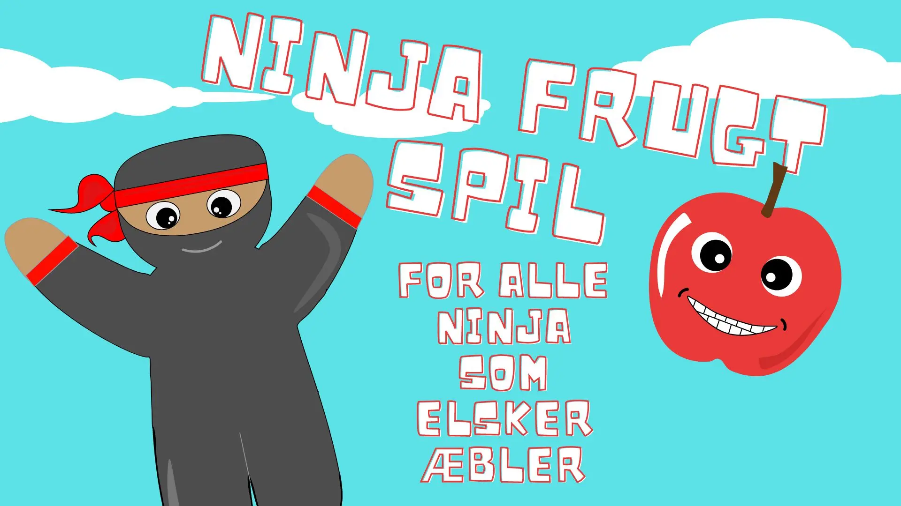

NinjaFrugt Spil
Sketch
Projektbeskrivelse
Hvad er den mest spændende måde at lære webanimation og blive introduceret til grundlæggende programmering med JavaScript? Et spil. Heldigvis havde jeg det som et projekt inden for grundlæggende animationsemne, hvor jeg skabte et spil kaldet Ninja Frugt, hvor spilleren skal nå at samle 10 æbler inden for en given tid, ellers taber man.
NinjaFrugt Spil
Erhvervede kompetencer
Under projektet lærte jeg spildesignprincipper, planlægning af spillets mekanik ved brug af aktivitets- og tilstandsmaskinediagrammer. Jeg forbedrede mine CSS-færdigheder ved at lære animationer og vigtigst af alt, fik jeg en grundlæggende JavaScript-fundament. Dette projekt var et vendepunkt i forståelsen af, hvordan man organiserer og strategiserer kode, bruger webudviklerværktøjer og fejlfinder kode.
Spilflow Forklaring
Et spilflow diagram er en simpel tegning, der viser, hvordan et spil fungerer. Det viser, hvad der sker, når spilleren gør noget, og hvordan spillet reagerer.
For eksempel i det diagram, du har vist:
- Handlinger som "Æblet falder ned" eller "Klik på æblet" viser, hvad der sker i spillet.
- Beslutninger som "Ingen liv tilbage" viser, hvad der sker, afhængigt af spillerens valg eller spillets tilstand.
- Resultater som "Game over" eller "Level Complete" viser, hvad der sker til sidst, baseret på de valg eller handlinger, der blev taget.
Dette diagram hjælper med at planlægge spillet, så man kan se, hvad der skal ske, og sikre, at alt i spillet fungerer, som det skal. Det er en måde at tænke igennem og organisere spillet på, før man begynder at lave det.